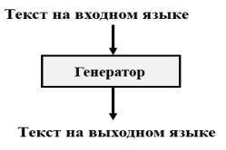

Технологии информационного взаимодействия компонент информационно-аналитических систем
1. Компилятор.
Компилятор — программа, переводящая написанный на языке программирования текст в набор машинных кодов. В основном используется для программ, которые переводят исходный код с ЯП высокого уровня на более низкий.
2. Перекодировщик.
Перекодировщик осуществляет перевод текста программы одного ЯП в текст программы другого аналогичного по уровню.
3. Компилирующий режим.
Компиляция — это процесс перевода исходного кода программы на машинный язык. Ее результатом является создание исполняемого файла программы, который может быть запущен в торговой платформе.
Компиляция состоит из нескольких этапов:
· Лексический анализ
· Синтаксический анализ
· Семантический анализ
· Генерация кода
· Оптимизация кода
4. Интерпретатор.
Интерпретатор (на входе тексты на языке высокого уровня, на выходе тоже машинный код (который на выход подает текст по частям))
Интерпретация — построчный анализ, обработка и выполнение исходного кода программы или запроса (в отличие от компиляции, где весь текст программы, перед запуском, анализируется и транслируется в машинный или байт-код, без её выполнения)
5. Основные части транслятора.
Транслятор — программа, которая принимает на вход текст программы на одном языке (он в этом случае называется исходный язык), и преобразует её в программу, написанную на другом языке. Перевод одного языка в другой называется трансляцией.
Виды трансляторов:
· Компилятор
· Интерпретатор
· Ретранслятор
· Перекодировщик
Транслятор можно построить по классической схеме, в которой чётко выделяются 3 части: лексический анализатор, распознаватель (синтаксический анализатор) и генератор (семантический анализатор);
6. Анализирующая часть транслятора состоит из . . .
Лексического, синтаксического и семантическогоанализаторов.
Лексический анализатор преобразует входной символьный поток в последовательность более крупных единиц – лексем. Например, текст из 14 символов (включая пробелы) преобразуется в последовательность из 7 лексем
Синтаксический анализатор входного языка проверяет синтаксическую правильность входной цепочки (уже разбитой на лексемы) и строит её семантическое дерево.
Контекстный анализатор проверяет выполнение контекстных условий (соответствия типов данных, числа параметров процедур, отсутствия передачи управления внутрь тела цикла и многих других), а также расширяет семантическое дерево программы до её полной семантической структуры. На практике его обычно соединяют с синтаксическим анализатором.
Семантический анализатор – это часть компилятора, которая проверяет смысловую правильность конструкции языка. Задача семантического анализатора состоит в том, чтобы извлечь из формально построенного синтаксического дерева содержательную информацию о структуре программы.
7. Последовательность работы анализаторов.
Возможны 2 схемы работы транслятора.
Первая – использует блочный принцип, при котором части транслятора вызываются в последовательности: лексический анализатор, распознаватель, генератор. Каждая часть обрабатывает всю программу от начала до конца и только после этого работает следующая часть.
Вторая – использует принципы подпрограмм, когда все части транслятора работают совместно, каждый очередной входной символ лексического анализатора немедленно обрабатывается распознавателем, а каждый элемент разбора, если нужно, тут же вызывает требуемую семантическую подпрограмму генератора.
8. Как реализованы лексический и синтаксический анализаторы в однопроходном трансляторе?
Лексический анализатор и генератор кода выступают в роли вызываемых им подпрограмм. Как только синтаксическому анализатору нужна очередная лексема, он вызывает сканер. При получении фрагмента промежуточного представления осуществляется обращение к генератору кода. Завершение процесса трансляции происходит после получения и обработки последней лексемы и инициируется синтаксическим анализатором.
9. Реализация семантического анализатора.
Семантический анализатор – это часть компилятора, которая проверяет смысловую правильность конструкции языка.
Задача семантического анализатора состоит в том, чтобы извлечь из формально построенного синтаксического дерева содержательную информацию о структуре программы.
Входными данными для семантического анализа служат: таблица идентификаторов; результаты разбора синтаксических конструкций входного языка.
Семантический анализ выполняется на 2 этапах компиляции: на этапе синтаксического разбора и в начале этапа подготовки к генерации кода.
10. Какие типы ошибок должна распознавать анализирующая часть транслятора?
3 вида ошибок:
Лексические ошибки, ошибки набивания текста. Самое простое – ошибки в ключевых словах. Например, в словах: "Begin", "End".
Синтаксические ошибки – ошибки в конструкциях используемого (разрабатываемого) языка программирования. Т.е., входной текст не соответствует правилам написания входного языка.
Семантические ошибки – ошибки в алгоритме программы (не ловятся транслирующими средствами)
11. Какие типы ошибок распознаются в генерирующей части транслятора?
В лексемах отсутствуют комментарии.
Лексемы одинаковой длины.
Лексемы несут числовую информацию.
12. Генерирующая часть транслятора состоит из: …
13. На вход генерирующей части транслятора поступают: …
На входе генератора кода – промежуточные таблицы
14. На выходе генератора кода получаем: …
На выходе – текст на выходном языке.
15. Вход и выход генератора кода (генерирующей части транслятора).
На входе генератора кода – промежуточные таблицы на выходе – текст на выходном языке.
16. Генерирующая часть транслятора в свою очередь состоит из: . . .
17. В какой части транслятора реализован семантический анализатор?
Семантический анализ выполняется на 2 этапах компиляции: на этапе синтаксического разбора и в начале этапа подготовки к генерации кода.
В первом случае всякий раз по завершении распознавания определенной синтаксической конструкции входного языка выполняется её семантическая проверка на основе имеющихся в таблице идентификаторов данных.
Во втором случае, после завершения всей фазы синтаксического разбора, выполняется полный семантический анализ программы на основании данных в таблице идентификаторов.
В каждом компиляторе обычно присутствуют оба варианта семантического анализатора.
18. Что должен демонстрировать транслятор, работающий до первой ошибки?
Диагностические сообщения об ошибке, указание конкретного места и типа ошибки.
19. Основные преимущества работы транслятора до первой ошибки по сравнению с традиционными вариантами.
Традиционный вариант диагностики (все ошибки) имеет существенные недостатки – так называемые наведенные ошибки. Например: при неправильном описании переменной в заголовке программы, все вхождения этой переменной в основной части программы будут диагностироваться ошибочными.
Иногда при изменении, скажем, одного оператора промышленный транслятор выдает целый ряд ошибок и среди них достаточно трудно найти "основную" или "главную".
Алгоритм работы до первой ошибки вполне приемлем при реализации проблемно-ориентированного ЯП. Упор делается на точное диагностирование ошибки.
20. Что означает число проходов (однопроходный транслятор, двухпроходный транслятор, многопроходный транслятор)?
Проход – это полный просмотр исходного текста программы.
Однопроходной транслятор — транслятор, преобразующий исходный код при его однократном последовательном чтении (за один проход).
Многопроходной транслятор — транслятор, преобразующий исходный код после его нескольких чтений (за несколько проходов).
21. Семантические ошибки.
Семантические ошибки – ошибки в алгоритме программы (не ловятся транслирующими средствами).
Семантическая ошибка возникает, когда оператор синтаксически правильный, но не выполняет то, что задумал программист. Иногда это приводит к сбою программы, например, в случае деления на ноль.
В большинстве случаев компилятор не сможет отловить большинство из этих типов проблем, потому что компилятор предназначен для обеспечения соблюдения грамматики, а не намерений.
22. Какие промежуточные этапы необходимо использовать при переходе от «постановки задачи» к «программному обеспечению»?
Переход от «Постановки задачи» к «Программе» труден и неэффективен. Целесообразно добавить еще два элемента «Алгоритм» и «Блок-схема алгоритма».
Основные усилия нужно направить на создание алгоритма (70% всех усилий). Затем по алгоритму построить блок-схему (20 %), которая является графическим образом программы. Переход от блок-схемы к программе должен занимать немного усилий.
23. Основные принципы структурного программирования.
3 принципа:
· максимальное включение комментария в программу,
· не использование оператора GOTO;
· использование только трех (пяти) разрешенных блоков: функционального, ветвления (If-THEN-ELSE и случай CASE) и цикла (с предусловием и с постусловием)
24. Три основных блока структурного программирования: . . .
25. Переход от 3 этапов структурного программирования к 5-ти: . . .
26. Пять основных блоков структурного программирования включают в себя два блока цикла: . . .
· цикл с пред условием
· цикл с пост условием
27. Основное (объединяющее) достоинство трех блоков структурного программирование.
28. Из трех операторов цикла какой избыточен (без него можно обойтись)?
3 вида конструкций цикла:
· с фиксированным числом итераций,
· с предусловием,
· с постусловием.
Избыточный варианта (а). Без варианта (а) можно обойтись
29. Три этапа программирования: . . .
· Написание программы.
· Откладка.
· Тестирование
31. Основные составляющие формы Бэкуса-Наура.
БНФ – формальная система описания синтаксиса, в которой одни синтаксические категории последовательно определяются через другие категории. БНФ используется для описания контекстно-свободных формальных грамматик. Используется для описания синтаксиса ЯП, данных, протоколов
язык = "Вegin" Звено...Звено Опр ";" ... Опр "End"
Звено = ["First" ! "Second"] Вещ "," ... Вещ
Опр = </ Метка":" /> Переменная "=" Цел
Вещ = Цел "." Цел
...
Состовляющие:
· терминалы
· нетерминалы
· спец символы
Терминалы – основа создаваемого проблемно-ориентированного ЯП, их выбор (о необходимости отличия терминалов друг от друга, примеры).
Нетерминалы – вспомогательный инструмент формального описания языка (о необходимости также создавать данные элементы максимально отличными друг от друга).
Специальные символы – их соответствие основным инструментам программирования. Методический пример описания проблемно-ориентированного ЯП с помощью БНФ.
Терминалы даются в кавычках. Терминалы неизменны
Описание специальных символов { ... "разд" ... ! [] </ />} на данном примере
Нетерминалы могут быть во-первых – любыми. во-вторых, и использовать в разных вариантах
Однозначность БНФ:
· Все нетерминалы получаются путем выражения через терминалы.
· Все нетерминалы встречаются как слева, так и справа, кроме корней терминала.
32. Терминалы.
Основная составляющая формы Бэкуса-Наура (терминалы, нетерминалы, специальные символы)
БНФ – это то, что мы делали в прошлом семаке
Язык = "Вegin" Звено...Звено Опр ";" ... Опр "End"
Звено = ["First" ! "Second"] Вещ "," ... Вещ
Опр = </ Метка":" /> Переменная "=" Цел
Особенности:
· Терминалы даются в кавычках.
· Терминалы неизменны.
· Все нетерминаты (путем подстановок) выражаются через терминалы.
· Терминалы – слова входного языка.
· Терминалы являются основой создаваемого проблемно-ориентированного ЯП
33. Нетерминалы.
Основная составляющая формы Бэкуса-Наура (терминалы, нетерминалы, специальные символы)
БНФ – это то, что мы делали в прошлом семаке
Язык = "Вegin" Звено...Звено Опр ";" ... Опр "End"
Звено = ["First" ! "Second"] Вещ "," ... Вещ
Опр = </ Метка":" /> Переменная "=" Цел
Особенности:
· Нетерминалы – промежуточные слова. Нетерминалы, по сути, вспомогательный инструмент формального описания языка
· Терминалы неизменны, а нетерминалы могут быть любыми и использовать в разных вариантах. Все нетерминаты (путем подстановок) выражаются через терминалы.
· Все нетерминалы стоят как слева, так и справа (кроме одного некорневого нетерминала)
1) Опр = </ Метка ":" /> Переменная "=" Цел
Метка = Цел
2) Опр = </ Цел ":" /> Переменная "=" Цел
34. Диагностика транслятора осуществляется.
Диагностика транслятора. Основная ценность транслирующего средства – нахождение любой ошибки в тексте на входном языке. Для этого (в качестве "ловушки") используется дерево разбора, благодаря которому исходный текст расчленяется на отдельные составляющие
Диагностика должна:
· Адекватное указание ошибки. Диагностические сообщения должны нести в себе конкретный характер
· В тех случаях, когда существует некоторая неоднозначность (можно указать два или три варианта ошибки), необходимо перечислять все варианты.
· Алгоритм работы до первой ошибки вполне приемлем при реализации проблемно-ориентированного ЯП. Упор делается на точное диагностирование ошибки.
35. Лексический анализатор.
Лексический анализ («токенизация») — процесс аналитического разбора входной последовательности символов на распознанные группы — лексемы, с целью получения на выходе идентифицированных последовательностей, называемых «токенами» (подобно группировке букв в словах). В простых случаях понятия «лексема» и «токен» идентичны, но более сложные токенизаторы дополнительно классифицируют лексемы по различным типам («идентификатор, оператор», «часть речи» и т. п.).
Лексический анализ используется в компиляторах и интерпретаторах исходного кода языков программирования, и в различных парсерах слов естественных языков.
Как правило, лексический анализ производится с точки зрения определённого формального языка или набора языков.
36. Вход и выход лексического анализатора.
Лексический анализ («токенизация») — процесс аналитического разбора входной последовательности символов на распознанные группы — лексемы, с целью получения на выходе идентифицированных последовательностей, называемых «токенами» (подобно группировке букв в словах).
· на входе тексты на исходном проблемно-ориентированном языке
· на выходе – лексемы
Традиционно принято организовывать процесс лексического анализа, рассматривая входную последовательность символов как поток символов.
37. Основные задачи, решаемые лексическим анализатором.
Лексический анализ («токенизация») — процесс аналитического разбора входной последовательности символов на распознанные группы — лексемы, с целью получения на выходе идентифицированных последовательностей, называемых «токенами»
Входной массив данных имеет смешанную текстово-цифровую информацию. С этим работать трудно. Нужно все привести к какой-либо единой форме. А дальше привести его к цифровому виду.
Таким образом, столь «разношерстную» информацию удается привести к единой цифровой форме, а также все полученные элементы (лексемы) имеют одинаковую длину.
Лексический анализатор – первый проход транслирующего средства по входному тексту. Другими словами, этот анализатор – приведение текста к единому формату, с которых значительно удобнее работать, нежели со входным текстом
38. Лексические ошибки.
Лексический анализ («токенизация») — процесс аналитического разбора входной последовательности символов на распознанные группы — лексемы, с целью получения на выходе идентифицированных последовательностей, называемых «токенами»
В ходе лектического анализа могут находится лексические ошибки. Лексические ошибки – неправильное написание слов. К примеру: система Microsoft Word (подчеркивание красным)
Наиболее распространенные лексические ошибки:
· неправильная буква в слове,
· отсутствует одна буква,
· одна лишняя буква,
· две рядом стоящие буквы переставлены в тексте.
39. Наиболее распространенные виды лексических ошибок (в словах)
Наиболее распространенные лексические ошибки:
· неправильная буква в слове,
· отсутствует одна буква,
· одна лишняя буква,
· две рядом стоящие буквы переставлены в тексте.
40. а) неправильная буква, б) пропущена буква, в) повторена буква, г) лишняя буква, д) две рядом стоящие буквы переставлены местами
Лексические ошибки – неправильное написание слов. Положительный пример: система WORD (подчеркивание красным).
Лексические ошибки: четыре наиболее распространенные:
· неправильная буква в слове;
· отсутствует одна буква;
· одна лишняя буква;
· две рядом стоящие буквы переставлены в тексте.
Возможность их исправления в автоматизированном режиме
41.Из скольких частей состоит лексема?
Лексема – последовательность допустимых символов ЯП, имеющая смысл для транслятора.
Существует 5 видов лексем:
· идентификаторы (имена, служат для того чтобы обращаться к программным объектам и различать их); Пример: hacker, Hacker и hAcKeR – 3 разных имени;
· ключевые слова (зарезервированные идентификаторы, которые имеют специальное значение для компилятора); Пример: if, new, break, float)
· знаки операций (один или более символов, определяющих действие над операндами); Пример: +, -, ==, != , <=, >=, +=
· разделители; Примеры разделителей: скобки, точка, запятая.
· константы (литералы, неизменяемые величины). Пример: true, false, null
42.Два основных свойства лексем.
2 правила лексемы: одинаковая длина и однородная цифровая информация.
Лексема может, например, состоять из двух байтов.
Первая часть лексемы показывает «Тип» данной части текста, например: 1 – служебное слово; 2 – целое число 3 – специальный символ и т.д. Во второй части лексемы «Содержание», например, если это служебное слово, то 1 – "Begin", 2 – "End" и т.п.
Таким образом, любую информацию удается привести к единой форме (кстати, цифровой), а также все полученные элементы (лексемы) имеют одинаковую длину.
43.На вход лексического анализатора поступают:
На входе лексического анализатора – текст на входном языке
44.На выходе лексического анализатора получаем:
На выходе – набор лексем(последовательность допустимых символов).
45.Лексический анализатор
Лексический анализатор - процесс аналитического разбора входной последовательности символов с целью получения на выходе другой последовательности символов (например, перевод сторки в число). При этом, группа символов входной последовательности, идентифицируемая на выходе процесса как последовательность допустимых символов (лексема), то есть в процессе лексического анализа производится распознавание и выделение лексем из входной последовательности символов.
На входе – тексты на входном языке. На выходе – лексем (последовательность допустимых символов). Анализирующая часть – поиск ошибок. Генерирующая часть – создание лексем.
46.На вход синтаксического анализатора поступают:
На входе синтаксического анализатора – лексемы
47.На выходе синтаксического анализатора получаем:
На выходе – набор промежуточных таблиц.
48.Вход и выход синтаксического анализатора:
На входе – лексемы.
На выходе – промежуточные таблицы.
Анализирующая часть – поиск ошибок.
Генерирующая часть – формирование текстов на выходном языке
49.Синтаксический анализатор
Синтаксический анализатор — это программа или часть программы, выполняющая синтаксический анализ. В ходе синтаксического анализа исходный текст преобразуется в структуру данных, обычно — в дерево, которое отражает синтаксическую структуру входной последовательности и хорошо подходит для дальнейшей обработки. Как правило, результатом синтаксического анализа является синтаксическое строение предложения, представленное либо в виде дерева
50.Синтаксические ошибки.
Синтаксические ошибки – ошибки в конструкциях используемого ЯП. Т.е., входной текст не соответствует правилам написания входного языка.
51.Что такое синтаксически-управляемый перевод?
Синтаксический управляемый перевод – соответствие между записью в БНФ (Форма Бэкуса — Наура) и ее графическим отображением.
Пример:
Язык = "Начало" Множества Операторы "Конец"
Множества = Множ ";" . . . Множ.
Операторы = Опер . . . Опер
52.Какой вариант рекурсии запрещен при применении метода рекурсивного спуска?
Скорее всего ответ – Многопрограммность – количество проходов по входному тексту. 1) Иду по входной строке, на выходе сразу же формирую выходную строку.2) Иду по входной строке – формирую лексемы, выбрасывая комментарии, или для начала выброшу комментарии, затем сформирую лексемы.
Метод рекурсивного спуска (вариант появления новых ветвей в дереве разбора)
Рекурсия — это такой способ организации вспомогательного алгоритма (подпрограммы), при котором эта подпрограмма (процедура или функция) в ходе выполнения ее операторов обращается сама к себе.
53.Какой из распознавателей (восходящий, нисходящий) чаще используется?
Нисходящие распознаватели более логичны. Распознаватели – распознает поток информации. Нисходящие распознаватели – сверху вниз по дереву разбора. Восходящие распознаватели – снизу вверх по дереву разбора.
54.Нисходящий распознаватель осуществляет:
Нисходящие распознаватели – сверху вниз по дереву разбора. Нисходящие распознаватели обрабатывают правила сверху вниз, верхние правила раньше нижних
55.Восходящий распознаватель осуществляет:
Восходящие распознаватели – снизу вверх по дереву разбора. Восходящие анализаторы используют нижние правила раньше тех, что расположены выше.
56.Синтаксически-управляемый перевод
См. Пункт 51
57.Что означает словосочетание "слева - направо"?
Название LL произошло от слова Left, поскольку анализатор просматривает входную цепочку слева-направо, и слова Leftmost, поскольку он обнаруживает появление правила по одному или группе символов, образующих левый край цепочки. На практике наибольшее применение имеет класс LL(1) грамматик, для которых детерминированный распознаватель работает по одному входному символу, расположенному в текущей позиции.
58.Что означает словосочетание "сверху-вниз"?
Нисходящие распознаватели обрабатывают правила сверху вниз, верхние правила раньше нижних.
59.Что означает словосочетание "снизу-вверх"?
Восходящие анализаторы используют нижние правила раньше тех, что расположены выше.
Автомат, выполняющий операцию свертки, в отличие от нисходящего распознавателя, не строит в магазине вывод цепочки, начиная с аксиомы грамматики, который соответствует построению синтаксического дерева цепочки “сверху - вниз”, а выполняет сворачивание символов, записанных в магазин. Такой порядок сворачивания символов, записанных в магазин, соответствует правому выводу цепочки, выполняемому “снизу - вверх”. Это обстоятельство объясняет, почему такие распознаватели называются восходящими. Подобный распознаватель должен учитывать при переходе не один символ, расположенный в вершине магазина, а цепочку символов.
60-65. Последовательность (приоритет) выполнения операций арифметического выражения, включающего в себя…
ПОЛНАЯ последовательность выполнения арифметических операций:
· Скобки;
· Функции;
· Логические операции (сначала "НЕ", затем "И" и "ИЛИ");
· Степенные операции;
· Мультипликативные операции (*, /);
· Аддитивные операции (+, -).
66. Реализация вложенных скобок осуществляется с помощью
Оператор = Переменная "=" Правая часть.
Правая часть = </ "-" /> Блок Зн1... Блок
Зн1 = «+» ! «-»
…
Элемент = Цел ! Вещ ! "(" Правая часть ")"
С помощью "(" Правая часть ")" можно осуществлять вложенность скобок с любой глубиной
67. Реализация скобок с ограниченной вложенностью описывается
Оператор = Переменная "=" Правая часть.
Правая часть = </ "-" /> Блок Зн1... Блок
Зн1 = «+» ! «-»
…
Элемент = Цел ! Вещ ! "(" Правая часть ")"
С помощью "(" Правая часть ")" k<=4 можно осуществлять вложенность скобок с глубиной 4
68. Метод рекурсивного спуска
Метод рекурсивного спуска (метод синтаксических подпрограмм) основан на том, что структура алгоритма часто повторяет структуру читаемых им данных. Повторяющемуся фрагменту данных в алгоритме соответствует цикл, а вариантам представления информации – ветвление.
В методе рекурсивного спуска транслятор или другая программа анализа текста представляется в виде набора подпрограмм, каждая из которых читает и обрабатывает в тексте свою конструкцию и вызывает (в том числе рекурсивно) соответствующие подпрограммы для анализа вложенных в нее конструкций.
Грамматика примет вид:
выражение ::= слагаемое [{+ | -} слагаемое] …
слагаемое ::= число
число ::= цифра …
цифра ::= 0 | 1 | 2 | 3 | 4 | 5 | 6 | 7 | 8 | 9
69. Использование готового программного обеспечения из фондов алгоритмов и программ
Применявшиеся во 2-й половине ХХ века универсальные ЯП:
а) ALGOL 60 (Algorithmic Language). Один из первых универсальных ЯП высокого уровня. Разработан в 1958 – 1960 гг. Оказал значительное влияние на все разработанные впоследствии ЯП высокого уровня.
б) FORTRAN (Formula Translator). Получил широкое практическое применение. Создан с 1954 по 1957 год. ПО на этом языке доступно в исходных кодах, хорошо документировано, отлажено и весьма эффективно.
в) PL/1 (Program Language No 1). Язык включал с себя "алгольную структуру", вычислительные способности FORTRANа и обработку текстовой информации языка COBOL. Язык совмещен из нескольких частей, а не создан по единой концепции. Язык получился большой и малоуправляемый.
70. Совместное программирование, использование программного обеспечения своих коллег
Шаги к совместному программированию:
а) Выбор единого интерфейса. Переход на единое ПО, в которых отдельные модули принадлежат разным исполнителям.
б) Использование одинаковых переменных и меток. Переход на программирование "макрокомандами" (набор операторов, который используется постоянно для решения похожих задач) каждого из партнеров. Формирования каждым партнером своего набора макрокоманд. Сравнение наборов и формирование единого набора макрокоманд для партнеров, работающих совместно.
71. Принципы построения перекодировщиков
Перекодировщик – транслятор без анализирующей части, у него только генерирующая часть.

При реализации перекодировщика можно перейти от исходного языка к графическому представлению, и от графического представления уже к другому языку.
72. Б/с программы, как связующее звено между текстами на различных языках программирования
Хз, что тут говорить, в лекциях ничего. Скорее всего надо сказать, что напротив с каждым элементом б/с должны быть соответствующие строчки кода. По аналогии как делали домашку
73. Перевод: Паскаль – Си
1) Совмещение блоков программы на Паскале с элементами графического представления.
2) Максимальное сохранение смысловой составляющей в программе (переменные, метки и т.п.).
3) Построение по элементам графического представления соответствующих блоков на языке Си.
Построение графического описания дает возможность проще понять общую структуру программы и уже на ее основе строить текст на другом ЯП. После получения блок-схемы по ней строится программа на языке Си. Сначала: переводятся основные конструкции: заголовок, циклическая операция, ветвление. Далее переход к реализации менее значимых операций.
Предлагается XML-шаблон для перевода конструкций цикла (с предусловием и постусловием) на языке Паскаль:
· в вариант графического представления;
· в вариант на языке Си.
74. Перевод: Си – Паскаль
1) Совмещение блоков программы на Си с элементами графического представления.
2) Максимальное сохранение смысловой составляющей в программе (переменные, метки и т.п.).
3) Построение по элементам графического представления соответствующих блоков на языке Паскаль.
Построение графического описания дает возможность проще понять общую структуру программы и уже на ее основе строить текст на другом ЯП. После получения блок-схемы по ней строится программа на языке Паскаль. Сначала: переводятся основные конструкции: заголовок, циклическая операция, ветвление. Далее переход к реализации менее значимых операций.
Предлагается XML-шаблон для перевода конструкций цикла (с предусловием и постусловием) на языке Си:
· в вариант графического представления;
· в вариант на языке Паскаль.
75. Конечные автоматы
Конечные автоматы – модель дискретного устройства, имеющего один вход, один выход и в каждый момент времени находящегося в одном состоянии из множества возможных. Можно представить в виде графа или таблицы.
Граф переходов — графическое представление множества состояний и функции переходов. Представляет собой размеченный ориентированный граф, вершины которого — состояния конечного автомата, дуги — переходы из одного состояния в другое, а метки дуг — символы, по которым осуществляется переход из одного состояния в другое. Если переход из состояния q1 в q2 может быть осуществлен по одному из нескольких символов, то все они должны быть надписаны над дугой диаграммы.
Таблица переходов — табличное представление. Обычно в такой таблице каждой строке соответствует одно состояние, а столбцу — один допустимый входной символ. В ячейке на пересечении строки и столбца записывается состояние, в которое должен перейти автомат, если в данном состоянии он считал данный входной символ.
По характеру отсчёта дискретного времени автоматы делятся на синхронные и асинхронные. В синхронных моменты времени, в которые автомат считывает входные сигналы, определяются принудительно синхронизирующими сигналами. Асинхронный считывает входной сигнал непрерывно.
76. Автомат Мура, текстовое представление
Конечный автомат, выходное значение сигнала в котором зависит лишь от текущего состояния данного автомата, и не зависит напрямую, в отличие от автомата Мили, от входных значений.
Может быть определён как кортеж из 6 элементов:
· множество внутренних состояний S (внутренний алфавит);
· начальное состояние s0;
· множество входных сигналов X (входной алфавит);
· множество выходных сигналов Y (выходной алфавит);
· функция переходов Ф : S x X → S;
· функция вывода G : S → Y.
77. Автомат Мура, представление в виде графа
78. Автомат Мили, текстовое представление
Конечный автомат, выходная последовательность которого (в отличие от автомата Мура) зависит от состояния автомата и входных сигналов. Это означает, что в графе состояний каждому ребру соответствует некоторое значение (выходной символ). В вершины графа автомата Мили записываются выходящие сигналы, а дугам графа приписывают условие перехода из одного состояния в другое, а также входящие сигналы.
Автомат Мура – совокупность A = (S , X , Y , δ , λ , S0), где
· S – конечное непустое множество состояний автомата;
· Х – конечное непустое множество входных символов;
· Y – конечное непустое множество выходных символов;
· δ : S x X → S – функция переходов, отображающих пары состояние / входной символ на соответствующее следующее состояние;
· λ : S x X → Y – функция выходов, отображающая пары состояние / входной символ на соответствующий выходной символ;
· S0 ϵ S – начальное состояние.
79. Автомат Мили, представление в виде графа.
80. Отладка адаптируемого программного обеспечения
Отладка – этап разработки ПО, на котором обнаруживают, локализуют и устраняют ошибки. Итеративный процесс обнаружения и исправления ошибок, обычно состоящий из 4 этапов: выявление ошибки, локализация ошибки в тексте программы, установление причины ошибки, исправления ошибки.
Использование в полной мере принципа "промежуточной печати". Установка вывода промежуточной печати как в результирующей программе, так и в исходной программе. Сравнение результатов на каждом этапе работы программы.
· после математических вычислений (проверка значений всех переменных).
· пометка ветвей операторов условного перехода (по какой ветке пошло вычисление.
· сообщение о каждой пройденной итерации цикла.
· распечатка всех переменных, передаваемых в подпрограмму (функцию).
· распечатка всех переменных, поступивших в подпрограмму (функцию);
81. Тестирование адаптируемого программного обеспечения
Тестирование ПО – процесс исследования, испытания создаваемого ПО, имеющий своей целью проверку соответствия между реальным поведением программы и её ожидаемым поведением на конечном наборе тестов.
82. CASE- технологии
CASE-технология представляет собой методологию проектирования ИС, а также набор инструментальных средств, позволяющих в наглядной форме моделировать предметную область.
CASE-технология включает в себя оригинальный вариант графического представления информации.
Каждая техническая операция (по центру) имеет следующую структуру:
· Слева (основные): исходные данные в стандартном представлении (документы, рабочие материалы, результаты предыдущей операции);
· Сверху (вспомогательные): методические материалы, инструкции, нормативы, и стандарты, критерии оценки результатов;
· Снизу (вспомогательные): сведения об исполнителях, программных и технических средствах;
· Справа (выходная информация): результаты в стандартном представлении.